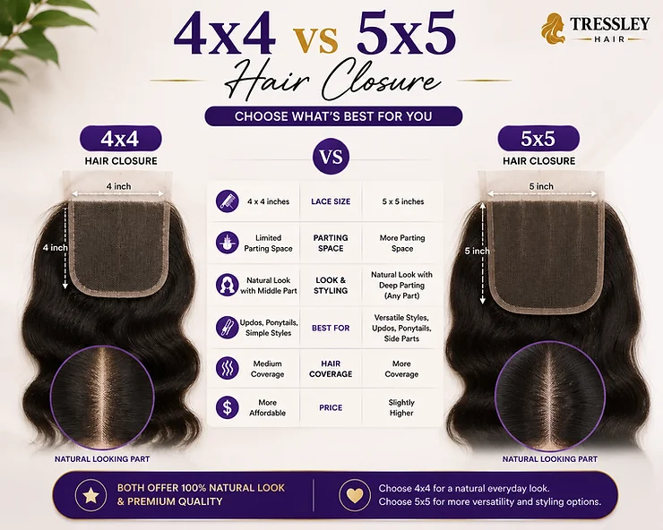
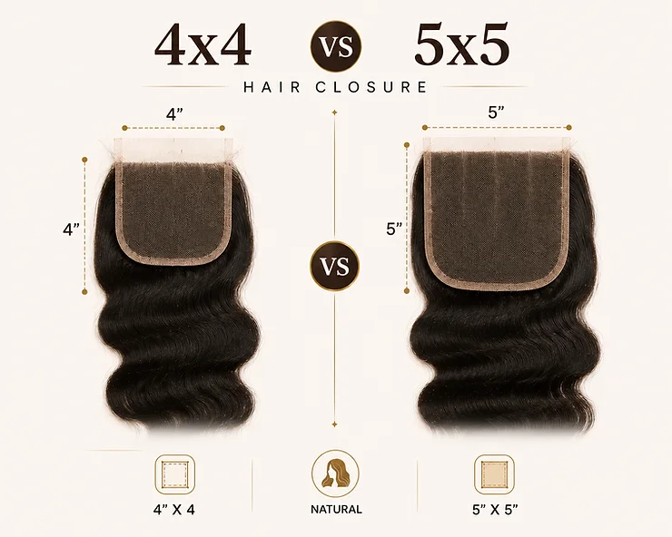

4×4 vs 5×5 Hair Closure: What Is the Difference? Which Size Should You Stock or Buy?

Subhani
Aug 26
8 min read
Updated: Nov 10

Quick answer: 4×4 vs 5×5 closure
A 4×4 closure covers approximately 4 inches across and 4 inches from front to back. A 5×5 closure covers approximately 5 inches across and 5 inches from front to back. The extra inch in each direction generally gives a 5×5 closure more lace coverage and flexibility for part placement. The best choice depends on your preferred hairstyle and how much lace you want to manage.
What is a 4×4 hair closure?
A 4×4 closure is a small lace hairpiece used to finish the top of a sew-in or wig. It provides a defined parting area and can help protect leave-out hair. Because the lace area is relatively compact, it can be straightforward for beginners to maintain.
What is a 5×5 closure?
A 5×5 closure has a larger lace area than a 4×4. That typically offers a little more room for moving the part and creating a natural-looking top. It is still a closure, not a full ear-to-ear frontal.
4 by 4 closure vs 5 by 5: comparison
Lace dimensions: 4×4 = about 4 by 4 inches; 5×5 = about 5 by 5 inches. Coverage: 5×5 is larger. Parting freedom: generally greater with 5×5. Lace to customize: generally less with 4×4. Price: varies by hair quality, lace and seller; a larger closure may cost more. Neither size guarantees a glueless fit.
Which closure gives a more natural-looking part?
Both can look natural when the lace suits your skin, the knots and hairline are prepared appropriately, and the installation is neat. A 5×5 offers more space to adjust the part; a 4×4 can be just as convincing for a centered or modest side part.
Is a 5×5 closure better than a 4×4?
Choose a 5×5 if you want extra parting room or more flexibility at the top. Choose a 4×4 if you prefer a smaller lace area and a simpler installation. For styles requiring extensive hairline access or sweeping parts across the head, a frontal may be more appropriate than either closure.
Can you make a closure wig glueless?
Some wigs built with either closure size can be worn without adhesive if the cap fits securely and the construction supports it. “Glueless” describes the wig design and fit, not the 4×4 or 5×5 dimension alone. Follow the product’s fit instructions.
Side-by-Side Comparison: 4x4 vs 5x5
| Factor | 4x4 Closure | 5x5 Closure |
| Lace dimensions | 4 inches by 4 inches | 5 inches by 5 inches |
| Approximate surface area | Baseline | About 25 percent larger |
| Parting flexibility | Good, standard range | Greater, supports deeper and wider parts |
| Typical price | Lower | Higher, due to more lace and hair required |
| Best suited for | Everyday wear, consistent part placement | Wearers who frequently change part style or position |
| Maintenance | Slightly simpler | Slightly more involved due to larger lace area |
| Beginner-friendliness | Generally easier for first-time wearers | Better suited to those with some closure experience |
Neither size reflects a difference in underlying hair quality. Both can be built from the same raw single-donor hair and the same lace grade, whether Swiss or HD, as covered in this guide to HD lace versus Swiss lace, which means the size decision can be made independently from the quality decision rather than treating the two as linked choices.
Why 5x5 Closures Cost More
The price gap between 4x4 and 5x5 closures reflects genuine production cost differences, not simply a premium size tax. A 5x5 closure requires roughly 25 percent more lace material and, more significantly, roughly 25 percent more hand-tied hair strands to fill that larger area at the same density.

Since hand-tying hair into lace is a slow, skilled, manual process, that extra surface area translates directly into more labor hours per unit, which is reflected in the final wholesale and retail price. Buyers evaluating a price difference between the two sizes from the same supplier can generally expect that gap to track fairly closely with this roughly 25 percent increase in material and labor input, and a dramatically larger or smaller gap than that is worth questioning.
Which Size Fits Which Hairline and Styling Habit
Matching closure size to the wearer's actual hairline shape and styling routine, rather than defaulting to whichever size is more popular at the moment, produces a more natural result and fewer complaints down the line.
Wearers with a fairly standard, symmetrical hairline. A 4x4 closure typically provides sufficient coverage and parting flexibility without unnecessary extra lace to manage.
Wearers with a wider forehead or a naturally receding hairline shape. A 5x5 closure's larger footprint can provide more forgiving coverage and a more natural blend along a less standard hairline.
Wearers who consistently wear the same part style. A 4x4 closure's standard parting space is generally sufficient, since there is less need for the extra flexibility a 5x5 provides.
Wearers who frequently switch between middle, side, and deep side parts. A 5x5 closure's larger surface area supports this kind of styling variety more comfortably than a 4x4.
First-time closure wearers. A 4x4 closure is generally the easier starting point, since it requires less lace management during installation and daily styling.
Durability and Care Differences Between the Two Sizes
Both sizes experience the same fundamental wear pattern over time, since they use the same lace and hair construction. The primary practical difference in care comes down to surface area. A 5x5 closure has more total lace exposed to adhesive, tension, and handling during install and removal, which means slightly more surface area where wear can eventually show.
Research on hair fiber weathering confirms that mechanical stress accumulates progressively through handling and friction, a pattern that applies to the lace foundation as much as it does to the hair fibers themselves. In practical terms, this means a 5x5 closure may show early signs of lace wear marginally sooner than a 4x4 simply due to its larger surface area experiencing more cumulative handling, though this difference is generally minor compared to the impact of overall care quality and adhesive choice.
Skin Safety Considerations Apply Equally to Both Sizes
Adhesive-based installation carries the same documented skin safety considerations regardless of closure size. Peer-reviewed case reports have linked allergic contact dermatitis reactions to specific adhesive compounds used in wig and hairpiece attachment, including cyanoacrylate-based adhesives and certain acrylate compounds found in wig-fixing adhesive tapes. A broader review of hair-product contact dermatitis confirmed that reactions along the hairline are a recurring, documented pattern in dermatology practice, independent of the specific lace piece's dimensions.
A larger 5x5 closure does involve more total adhesive surface area during a glue-based install, which is worth factoring in for wearers with known sensitivities. The American Academy of Dermatology's recommendation to patch test any product applied directly to the scalp or hairline applies equally to both sizes, and arguably matters even more with a 5x5 given the larger contact area involved.
Common Myths About Closure Size
Myth: Bigger always means more natural-looking. A larger closure only looks more natural if the lace grade, knot quality, and color match are equally good. A poorly matched 5x5 will look less natural than a well-matched 4x4.
Myth: Size determines how long a closure will last. As covered earlier, lifespan differences between sizes are minor. Care quality and lace grade matter far more than the size measurement itself.
Myth: You need a 5x5 or larger to achieve a deep side part. A 4x4 closure can generally accommodate a reasonably deep side part, though a 5x5 provides noticeably more room for an especially dramatic, closer-to-the-temple part.
Myth: Larger closures always require more skill to install. Installation technique is largely the same regardless of size. The main added consideration with a larger closure is simply more careful measurement and placement, not a fundamentally different skill set.
Common Buyer Mistakes When Choosing Between Sizes
Assuming a 5x5 closure is always the "better" or more premium option. Size and quality are separate specifications. A well-made 4x4 closure from quality lace and hair will outperform a poorly constructed 5x5 in actual wear, regardless of the larger size.
Choosing size based on trend popularity rather than hairline measurement. What looks best on a specific influencer's head shape will not necessarily translate to every wearer's actual hairline and forehead width.
Not accounting for the extra maintenance a 5x5 closure's larger lace area requires. Wearers underestimating this can end up with a closure that feels harder to manage than expected.
Assuming 4x4 and 5x5 closures from different suppliers are directly interchangeable at the same price point. Lace grade, knot density, and hair sourcing vary between suppliers even at identical size specifications, which affects both appearance and value.
Overlooking how closure size interacts with bundle count needed for a full install. A larger 5x5 closure may slightly reduce the number of bundles needed to achieve full coverage compared to pairing a smaller 4x4 with additional wefts, which is worth factoring into total install cost calculations.
The Bottom Line
The choice between a 4x4 and a 5x5 closure ultimately comes down to how much parting flexibility a wearer actually needs, weighed against the additional cost and maintenance that comes with the larger size. Neither one is a universal upgrade over the other, and a wholesale catalog or salon menu that offers both, with clear guidance on which fits which situation, serves customers better than defaulting to a single size for everyone.
Explore Tressley Hair's closures in both 4x4 and 5x5 sizing, backed by transparent sourcing standards, or request a wholesale quote to compare both sizes before your next order.
Frequently Asked Questions
What is the difference between 4x4 and 5x5 closure? A 5×5 has one additional inch of lace in both width and depth.
Is a 5x5 closure always better than a 4x4 closure? No. A 5x5 offers more parting flexibility and coverage, but a 4x4 is easier to maintain and often sufficient for wearers with standard hairlines and consistent part styles. Better depends entirely on the individual wearer's needs.
How much more does a 5x5 closure typically cost compared to a 4x4? The price difference generally tracks with the roughly 25 percent increase in lace and hair material required, though exact pricing varies by supplier, lace grade, and hair length.
Can a 5x5 closure be used for the same installs as a 4x4? Yes, generally. A 5x5 can be used in the same sew-in or wig-cap applications as a 4x4, though its larger size may require slightly different measuring and placement during installation.
Does a 5x5 closure look more natural than a 4x4? Not inherently. Naturalness depends more on lace grade, knot quality, and correct color matching than on size. Both sizes can look equally natural when constructed well.
Which size should a new reseller start with if budget is limited? Starting with 4x4 closures is generally the more budget-friendly entry point, with 5x5 added to the catalog once demand data supports the additional investment.
Do 4x4 and 5x5 closures require different adhesive amounts during installation? Yes, generally. The larger surface area of a 5x5 closure typically requires more adhesive coverage along its perimeter, which is worth factoring into per-install product cost for salons.
Is there a noticeable weight difference between a 4x4 and a 5x5 closure? The difference is generally minimal for most wearers, though those with sensitivity to scalp tension may notice the slightly larger hair volume of a 5x5 closure during longer wear periods.
Can I switch from a 4x4 to a 5x5 closure without changing my install method? Yes, in most cases. Both sizes work with the same sew-in or adhesive installation methods, though measurements should always be rechecked when switching sizes to ensure proper placement.
Read next
For a beginner-friendly definition, read What Is a 4×4 Hair Closure? If you are deciding between bundle types for your install, see our single drawn vs double drawn comparison.